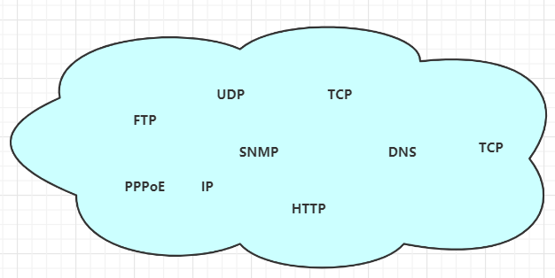
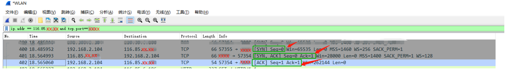
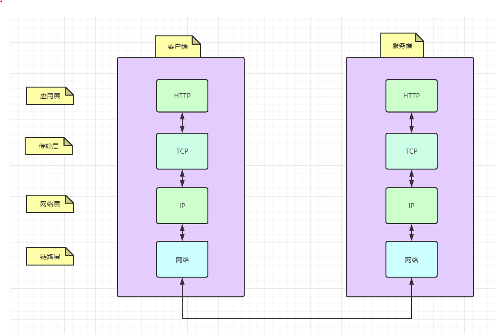
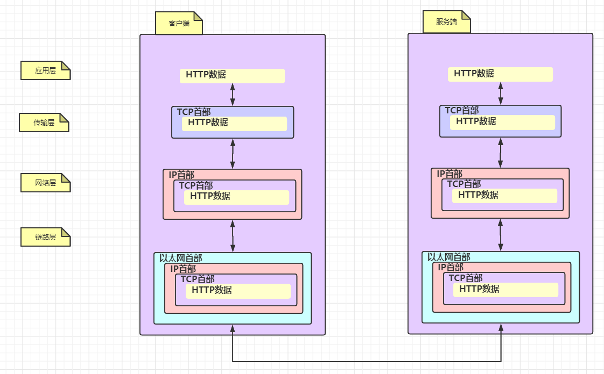
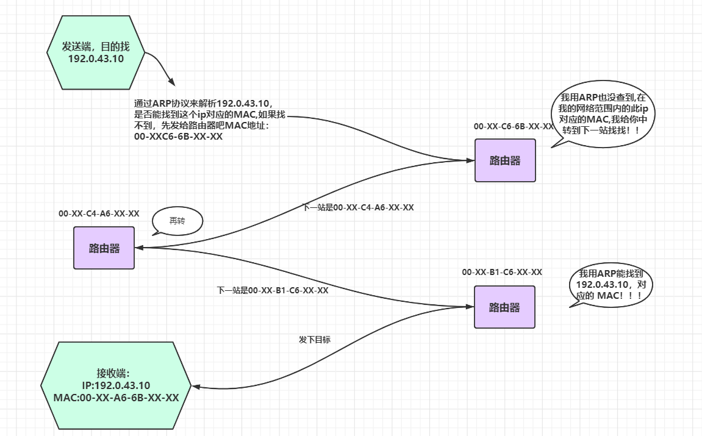
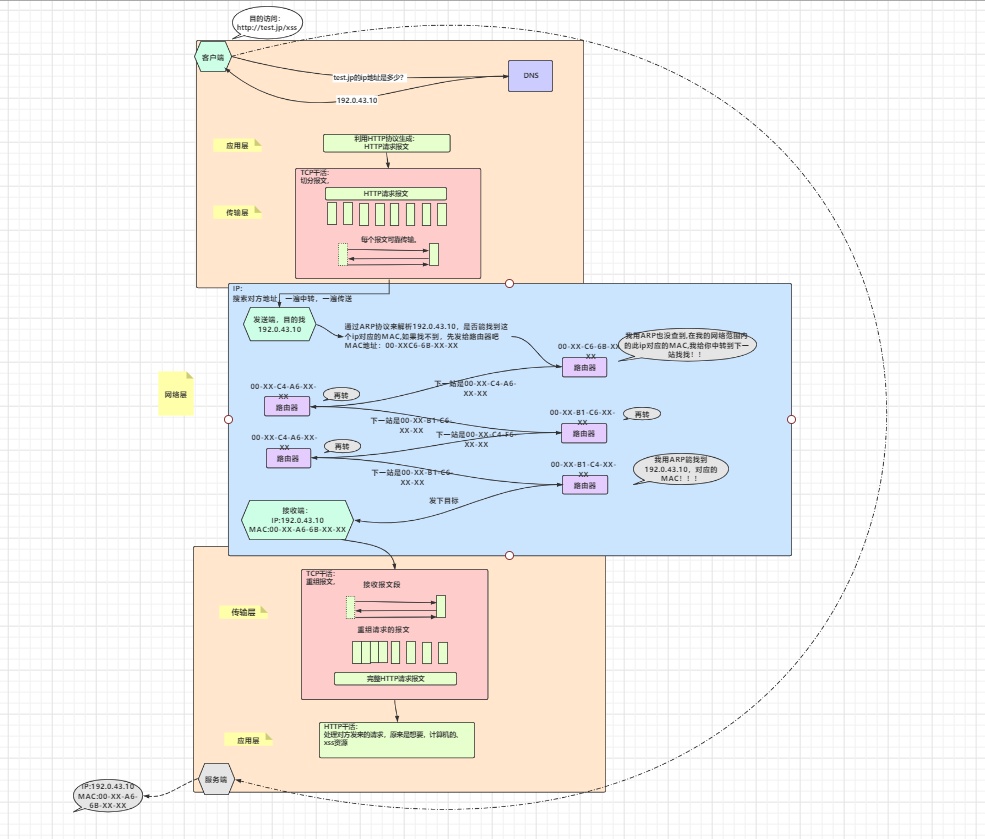

一个HTTP请求的网络脉络，解压爽文。
读完此篇会收获什么是一个完整HTTP请求，从客户端发送到服务端，到底经历了什么。
关键词TCP/IP 协议族
1写前的话
xxxxxxxxxx 这是第一次读一本书来用一种摘录的形式记录整理，相信大家多多少少听过此书的名字，一本经典的书------《图解HTTP》,与大家分享，此书共十一章，小编暂时计划将以十一篇博文的形式，分享大家，当然根据权重也可能会合并一些章节。如有侵权请您留言联系，我将立刻处理。 为什么要分享这本书？或者读这本书对我们自身的价值在哪里？这是我们要不要继续看这篇博文的一个理由。以下是我认为必要的原因：
- 完全了解http协议，我们会更加深刻理解Web开发
- 对客户端与服务器的通信交互场景细节了然于心。
- 思想启发
- 节省时间，我将摘录一些关键节点分享。
从思维启发来看： 上面的第三点，是我认为最重要的一点，深入理解http协议后，我们将会站在一个协议设计者角度，来看待“协议”这点事情，这是一个知识或者说是思想启发的迁移，站在高纬度视角，向山下眺望，会给予，肉身仍在山中的我们，清晰明确方向，最终完成目标。 从学习性价比来看： 非常nice!, 一个很扎心的事实，我们后端的开发技术，更新迭代的速度，远快于我们学习的速度，可是万变不离其宗的技术总是有内么几个，例如linux系统内核的io模型，系统的一致性,网络.....大家千万不要内心升起来那种，（这些都是偏底层的我学他干嘛啊，有时间还不如搞两个框架，新技术工具，拓宽一下），因为我以前也是这样想法，可是真正学习了这些偏底层的基础后，去看待一些从前自以为明白的技术，发现有了不一样的理解，而且有了底层基础后，学习新的技术，不会惊叹如此的神奇，而是觉得设计的巧妙！
自己感觉好啰嗦.....上干货吧。
2 网络请求概览
2.1 http 的产生
2.1.1什么叫做协议？
白话说： 协议是规则的约定，我们彼此间约定好一些数据格式，大家尊照预先设计好的格式来传输，这样每个尊重此格式规范的程序，都可以解析，并且，解析好在按照规定的格式来发送，一言以蔽之：前后端开发人员定义好，传的参数和返回参数的字段内容，方便解析。这就是协议。
2.1.2http定义
定义：Web使用一种名为HTTP的协议作为规范。术语：超文本传输协议（HyperText Transfer Protocol）,用它来完成web客户端到，服务端一系列的流程，所以说Web是建立在HTTP协议上的通信的。
2.1.3 http诞生历史
怎么来的？
制定http的初衷，是致力于全世界的研究者们进行知识共享!!!
源于：欧洲核子研究组织的Tim Berners-Lee 提出让远隔两地的研究者们共享知识的设想，之所以叫超文本，是最初设计理念，想借助多文档之间的相互关联形成的超文本。于是一个著名的词出现啦！"www"表示World Wide Web 中文翻译， 万维网或者叫做环球网。
www技术的构建由三点组成
1 页面的文本标记语言为HTML
2 所有的文档由URL作为地址标记（统一资源定位符）
3 作为文档传输协议的HTTP
好了我们已经知道了HTTP 协议怎么来的了，知识共享的万维网中，技术构建实现中，需要传输协议，所以， http诞生！！！！。
时间迭代史
1990年问世，并没有正式作为标准建立，因此被称为HTTP/0.9
1996年才作为标准版本定位HTTP/1.0
1997年公布HTTP/1.1,这是目前主流的协议版本（想想97年我还没上学那，那会就已经定型了基本。技术学习性价比还是很高的）
2015年公布HTTP2.0
2.1.4浏览器的小插曲
1990年诞生世界第一台web服务器和web浏览器
1992年日本第一个网站主页上线
1993年诞生现代浏览器的祖先NCSA
1994年网景通信公司发布Netspace Navigator1.0
1995年微软发布Internet Eplorer1.0和2.0
19995年 微软与网景公司爆发浏览器大战，两个公司各自对HTML进行扩展，于是出现写HTML页面时必须要考虑兼容两家公司的浏览器！浏览器供应商竞争中，对Web标准化视而不见.....
2000年网景公司衰落，竞争告一段落
2004年Mozilla基金，发布了Firefox,又爆发了浏览器大战....
IE浏览器版本从6 升到7花费了5年，之后不断发展 8 ，9,10,11，听说新版的Microsoft Edge ，好评很多，另外，Chrome,Opera,Safari浏览器也纷纷抢占份额
2.2tcp/ip协议族
TCP/IP协议族，这是一个集合，其中就包含HTTP协议如下：

纯手工制图...
不要被这些乱糟糟的协议影响心情，我们大概知道下，除了HTTP 外，哪些协议扮演了什么角色，就能概览一个整体HTTP请求，经过浩瀚的网络传输中到底经历了什么。
TCP/IP ，是一个集合中的总称，之所以叫这个名字我认为那是因为，TCP协议与IP协议太太太重要了！！
下面简单介绍下
下面要用的两个协议：
2.2.1DNS
出现DNS的原因就是我们人类不习惯 直接访问http://192.168.XX.XX 这样的网页，如果是字母英文那就好了是吧比如
http://www.taobao.com http://www.baidu.com ,所以为了方便服务我们记忆，DNS服务出现了，每次访问这种域名的地址时，DNS协议提供通过查找IP地址。
2.2.2TCP
按层次分TCP属于，传输层，提供可靠的字节流服务，即：TCP协议为了传输方便，把大块数据切分成报文段，来发送，并且发送方，根据接收方的响应，能确定数据是否最终到达对方。
经典面试题TCP三次握手
第一次
第一次握手：建立连接时，客户端发送syn包（syn=j）到服务器，并进入SYN_SENT状态，等待服务器确认；SYN：同步序列编号（Synchronize Sequence Numbers）。 第二次
第二次握手：服务器收到syn包，必须确认客户的SYN（ack=j+1），同时自己也发送一个SYN包（syn=k），即SYN+ACK包，此时服务器进入SYN_RECV状态； 第三次
第三次握手：客户端收到服务器的SYN+ACK包，向服务器发送确认包ACK(ack=k+1），此包发送完毕，客户端和服务器进入ESTABLISHED（TCP连接成功）状态，完成三次握手。
下图使用WireShark 抓包工具的一个tcp握手过程

具体演示：
192.168.2.104 por：57335为客户端 我们简称Client，服务端：116.85.x.xxx port：xxxx 我们简称Server
上图的流程：
第400行： Client首先向Server发送syn包，包序号seq为0
第401行： Server收到Client 的syn包后，将包序号加1，赋值给ack。 ack1=seq+1=1 【seq来自Client】。同时还要发送自己的包序号seq=0。
第402行： Client收到回复之后,需要回复Server。自己的包序号seq=seq+1=0+1=1 【seq来自Client】。同时将服务端的包序号加1，再发送回去。即ack=seq+1=0+1=1 【seq来自Server】
2.3网络的分层
TCP/IP协议族这个集合中虽然，包含了很多协议，看起来杂乱，但其实分层来看，还是很清晰的，这里提一点，分层的好处，我们开发时经常会controller ,service ,dao,其实这就是在分层解耦，试想如果互联网的传输协议仅仅是一个协议搞定，那么如果改动，就需要把整体替换掉，可是如果分层，我们只需要替换被修改的那层即可,分层如下：

纯手工制图...
2.4各层介绍
2.4.1应用层：
抽象说，应该叫做用户具体的活动干了什么，用规范的协议来书写记录这些活动，然后被传输层发送。
应用层HTTP,FTP,DNS,都属于应用层，白话来说，浏览网页，必然使用http 协议来干活（同时还有DNS），xshell 连接工具中有ftp 传输文件的功能，自然是FTP协议来干活，浏览www.baidu.com 必然要将 域名转换成ip地址,需要的是DNS协议来干活，这些协议一般会预存在我们电脑中。
2.4.2传输层
真正在两台计算机间数据传输的方式，一般为两种：UDP,TCP 。
UDP发送数据包无序服务端响应确认，数据传输不可靠，但是速度快。
TCP发送数据包要求服务端确认是否收到,没收到重发！，数据传输可靠，但是速度慢。
根据场景不同我们来选择。举个例子语音通话，采用tcp,如果网络卡顿，重发了声音数据，听起来会前言不搭后语呀，并且说一句话tcp要每次检查是否数据完整，客户时间上体验感会感到巨慢！
2.4.3网络层
为传输的数据包选择一个路线，数据包是网络传输最小的数据单位。
在众多的路线中选择一条传输路线。大家脑海中要有一个概念，每个网络请求几乎是通过好多路由层层跳跃到下一个路由，最后才到达目标服务器。所以网络层是选择层层跳跃的路线中选择一个传输路线。
2.4.4链路层
用来处理网络连接硬件的部分，例如硬件设备驱动，网卡，等物理可见部分。
网络请求流程图细化

纯手工制图...
特别注意
可以看到每层协议都对数据封装，需要注意的是为了传输方便，一个http请求的内容，会被TCP分割成多个片段来传输。另外IP协议是几乎所有使用网络的系统都会用到IP协议，用来传输数据包有两个总要条件，ip地址，和MAC地址，（mac地址是每台电脑出厂的一个唯一id),这里我要插条ARP协议的内容（https://blog.csdn.net/weixin_41955327/article/details/85562687）及其简单3分钟内的内容 帮你了解ARP是个什么东东。强烈建议看下。
在解释下上面说的层层跳跃的意思：
到达通信目标前的中转过程中，那些计算机和路由器等网络设备能获悉很粗略的传输路线。这种机制成为路由选择机制。请看下图：

纯手工制图...
如上图层层跳跃的意思不断的中转
3总体流程图
这个截屏不是很清晰，稍后我会把原图地址放到最后，可以网页查看原图地址，所有的图都在这里。

纯手工制图...
如果你能看到这里了，不如点赞关注一波，我会认真分享每一篇博文。大家共同成长。
我的公众号：茄子的笔记
赠人玫瑰，手有余香，你的关注，我的动力！
更多分享可见：